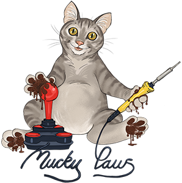

Lotto
011521243251BONUS09
030420384647BONUS33

Historical and current UK National Lottery result data maintained for the MuckyPaws Lottery Checker project.
This archive consolidates draw, prize, winner and raffle information from publicly available lottery sources and preserves historical records locally when upstream services provide only rolling datasets. It is primarily maintained for use by the MuckyPaws Lottery Checker and is also published in human-readable CSV form for reference.
Current Lottery software build: 1836. Archive generated 2026-09-02T21:07:49.261245Z.
Website: https://muckypaws.com/
Lottery news: https://muckypaws.com/category/lottery/
Community: https://muckypaws.com/community/
Latest result currently held in each published feed. These cards are generated from the same CSV files listed below.
The published files cover Lotto, Lotto HotPicks, Thunderball, EuroMillions, EuroMillions HotPicks, Set For Life, Powerball, Irish Lotto, Irish Lotto Plus 1, Irish Lotto Plus 2 and the Postcode Lottery. Depending on the game and historical period, feeds include winning numbers, jackpots, prize tiers, winner counts, machine/ball-set information and raffle codes.
Current data is collected from official National Lottery public endpoints, with Merseyworld used as a valuable independent secondary and historical source. Raw responses are retained by the archive process so parsers and reconciliation rules can be improved later without repeatedly requesting historical material.
Rolling upstream feeds are treated as incremental inputs. Historical records already held by this archive are not intentionally deleted simply because an upstream source has aged them out.
Development notes, releases and background information are published at https://muckypaws.com/category/lottery/. Questions, beta testing, bug reports and general discussion are welcome via https://muckypaws.com/community/. The main site is https://muckypaws.com/.
This is an independent project and is not affiliated with, endorsed by, or operated by The National Lottery, Allwyn, or Merseyworld. Data is provided for information and software-support purposes. Winning tickets and prize claims should always be verified through the official National Lottery service.